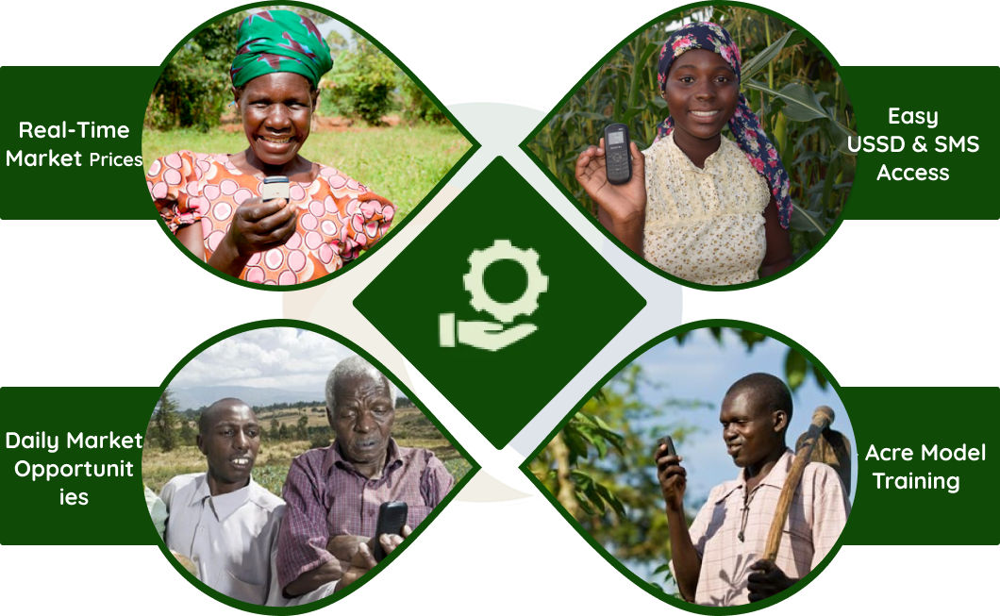

Agri-Link is more than an SMS service — it’s the foundation of East Africa’s first regional market trend dataset. By combining real-time market prices, weather forecasts, and sustainable farming lessons, we empower farmers with actionable insights while laying the groundwork for national-level market prediction models.
Works on any mobile phone with SMS/USSD.
Among the 6 Winners of 2024 Green Growth AgriHack Hackathon.
We deliver practical services for farmers today while building a powerful dataset for tomorrow.
Contact UsDaily market prices via SMS while feeding data into a national dataset.
Localized SMS alerts to reduce crop loss.
Helping farmers connect with buyers & transport.
Step-by-step SMS lessons on hydroponics, 4Acre model, and sustainable practices.
Aggregating East Africa’s first market trend dataset for prediction models.
Works on any phone via SMS/USSD.
Winner of 2024 Green Growth AgriHack Hackathon.
Because Agri-Link is not just a tool — it’s a movement. We are building the future of African agriculture data infrastructure while solving real problems for farmers today. From SMS market prices to SMS 4Acre Model training, our solution is affordable, scalable, and award-winning.
From 4Acre models to hydroponics, simplified into SMS lessons.
Always available in local languages.
Agri-Link is honored to be recognized globally for building East Africa’s first Market Trend Dataset and empowering smallholder farmers through SMS & USSD innovation.
Global Innovation Hub
Tech & Green Growth Partner
Sponsors
Sponsors
Sponsors
Sponsors
Entrepreneurship Accelerator
Innovation Leadership Uganda
Awarded for buildinga a multilingual USSD & SMS-based platform that provides smallholder farmers with market prices, weather updates, and best practices. With All data points feeding into the Market Trend Dataset for future AI-powered price predictions hence building Uganda’s first Market Trend Dataset and advancing SDG1 (No Poverty), SDG2 (Zero Hunger), and SDG13 (Climate Action).
"Before Agri-Link, I used to rely on traders for prices and often sold at a loss. Now, I get daily SMS updates on real market prices and connect directly to buyers. My income has grown by 40% in just one season."
"Agri-Link has saved me time and transport costs. Instead of walking to different farms, I get instant SMS alerts when crops are ready and where. It has made my work as a trader faster and more profitable."
Be part of Uganda’s first Market Trend Dataset and get instant access to fair market prices, weather updates, and SMS training — anytime, anywhere, on any phone.
Get Started Today Partner With Us© Agri-Link App. All Rights Reserved. Designed by Enazen Global Consults LTD